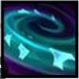
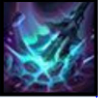
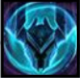
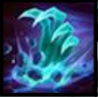
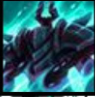

Mordekaiser obtiene una poderosa aura de daño y velocidad de movimiento después de asestar 3 ataques o hechizos contra campeones o monstruos.
Mordekaiser golpea el piso con su maza e inflige daño a todos los enemigos alcanzados. El daño aumenta cuando alcanza a un solo enemigo.
Mordekaiser almacena el daño que inflige y recibe para crear un escudo. Puede consumir el escudo para curarse.
Mordekaiser atrae a todos los enemigos en un área.
Mordekaiser arrastra a su víctima a una dimensión distinta con él y roba una parte de sus estadísticas. Si la mata, conservará las estadísticas hasta que la víctima reaparezca.
